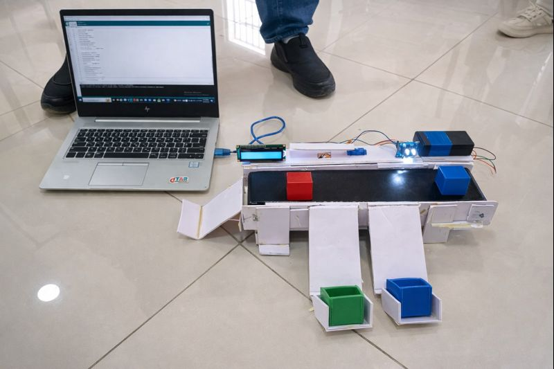
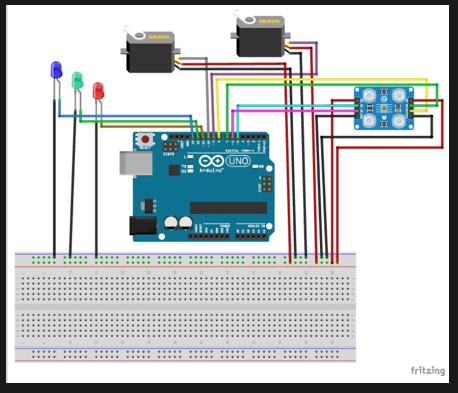
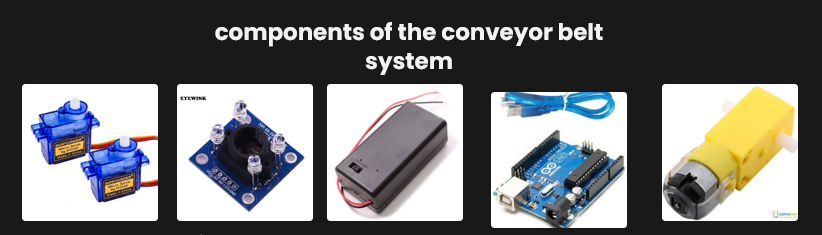
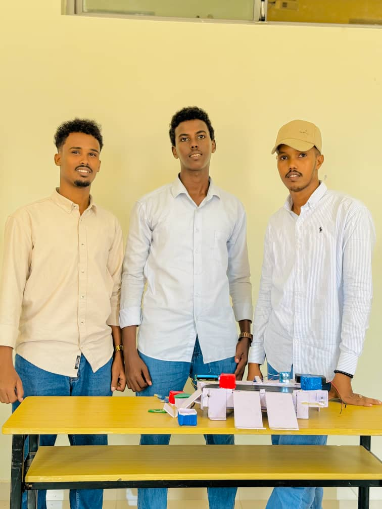

Back to Projects
Color-Based Conveyor Belt System
University Group Project • Embedded Systems / Automation
Overview
An automated conveyor belt system designed to detect object colors and sort items using servo-controlled mechanisms. The system demonstrates basic industrial automation concepts using Arduino and sensor-based control.
My Role
- Contributed to system design and control logic
- Integrated Arduino with sensors and motors
- Assisted in hardware assembly and testing
- Participated in system calibration and demonstrations
How the System Works
- Objects move along a conveyor belt driven by a DC geared motor.
- A color sensor detects the objects color as it passes the sensing point.
- Based on the detected color, servo motors are activated to direct the object to the correct path or location.
Project Gallery

Full conveyor belt system

circuit-diagram

* Note: This project was completed as a university group assignment. The focus was on practical automation design and system functionality rather than code optimization.
Demonstration & Media
Project Demonstration: Automated Sorting in Action

team members
me with the project